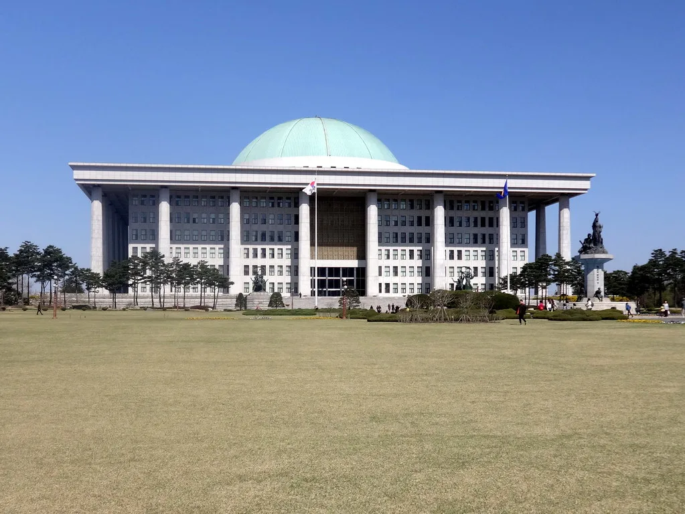
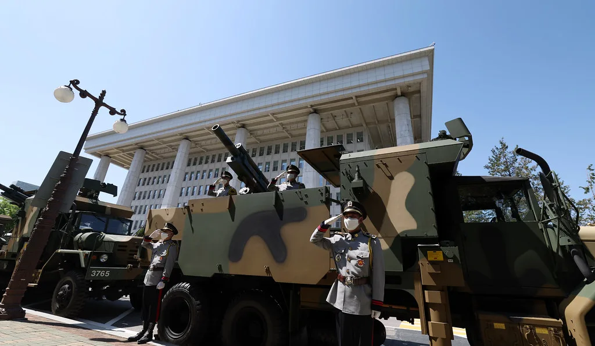

국회, 24일 본회의서 행정통합특별법·사법개혁 3법 처리 시도…여야 공방
국회는 24일 오후 2시 본회의를 열어 지역 행정통합특별법과 사법개혁 관련 법안 등을 처리할 예정이다. 당초 여야는 본회의를 26일 여는 데 합의했던 것으로 알려졌지만, 더불어민주당이 일정을 앞당길 것을 요구하면서 결국 24일로 확정됐다. 이 과정에서 국민의힘은 합의된 일정을 뒤집었다며 강하게 반발했고, 여야는 본회의 개의 시점을 둘러싸고 전날부터 날 선 공방을 벌였다. 여당은 정기국회 회기가 촉박한 만큼 핵심 법안을 더는 미룰 수 없다는 입장을 내세웠고, 야당은 절차적 정당성을 문제 삼으며 맞섰다.
이날 본회의에 상정될 핵심 법안은 충남·대전권, 대구·경북권, 전남·광주권 등 3개 권역의 행정통합을 뒷받침하는 특별법이다. 해당 권역 자치단체들이 추진해 온 통합 논의를 법적으로 뒷받침하는 내용으로, 통합 추진 과정에서 필요한 행정·재정 지원 근거를 담았다. 지역에서는 행정통합이 실제로 추진될 경우 조직 개편과 예산 배분을 둘러싼 후속 논의가 이어질 것으로 보고 있으며, 통합 권역에 속한 기초자치단체들 사이에서도 손익을 따지는 셈법이 엇갈리는 것으로 전해졌다.

함께 처리될 사법개혁 3법에는 법왜곡죄 신설, 재판소원제 도입, 대법관 증원을 골자로 하는 내용이 포함됐다. 법왜곡죄는 법관이 고의로 법리를 왜곡해 판결한 경우 형사처벌할 수 있도록 하는 조항이며, 재판소원제는 법원의 재판에 대해서도 헌법재판소에 헌법소원을 낼 수 있도록 길을 여는 것이 핵심이다. 대법관 증원은 현재의 재판 지연 문제를 해소하기 위한 조치로 거론돼 왔다. 다만 법조계 일각에서는 사법권 독립 침해 우려를 제기하며 신중한 접근을 요구하고 있고, 법관 사회 내부에서도 법왜곡죄의 적용 범위를 둘러싸고 의견이 갈리는 것으로 알려졌다.
이와 함께 자사주 소각을 의무화하는 내용을 담은 3차 상법 개정안도 이날 처리 대상에 포함됐다. 상장사가 매입한 자사주를 일정 기간 안에 소각하도록 강제해 경영권 방어 목적의 자사주 활용을 제한하고 주주가치를 높이겠다는 취지다. 재계에서는 경영권 방어 수단이 줄어드는 데 대한 우려를 제기해 왔으며, 투자자 단체들은 대체로 환영하는 분위기다. 앞서 처리된 1·2차 상법 개정 논의의 연장선에 있는 이번 개정안이 시행되면 상장기업의 지배구조 전반에도 상당한 변화가 예상된다는 분석이 나온다.

국민의힘은 이날 처리될 법안들이 충분한 여야 협의 없이 다수 의석을 앞세운 더불어민주당 주도로 강행 처리되는 것이라며 반발했다. 특히 사법개혁 3법에 대해서는 사법부 독립성을 흔들 수 있다는 점을 들어 표결 직전까지 반대 토론에 나설 것으로 예상된다. 이에 대해 더불어민주당은 행정통합과 사법개혁 모두 국정 운영의 시급한 과제라며 이번 회기 내 처리가 불가피하다는 입장을 고수하고 있다.
이번 본회의는 정부가 추진 중인 2차 중앙행정기관 세종 이전 논의와도 맞물려 있다. 정부는 44개 중앙행정기관과 소속 공무원 약 9900여 명을 단계적으로 세종으로 옮기는 계획을 발표한 상태로, 이를 둘러싼 지역 간 이해관계 공방도 가열되는 분위기다. 행정통합특별법 처리와 세종 이전 논의가 동시에 진행되면서, 향후 지방행정체제 개편을 둘러싼 여야 간 정치적 공방은 정기국회 회기 내내 이어질 전망이다.